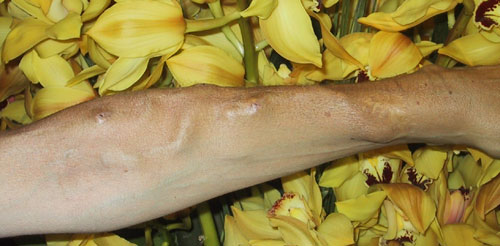

nephron.org
nephron.org
by Judy Weintraub


Judy
Weintraub has been on dialysis since 1975. This fistula was
created several months later, and is still being used. Judy
cannulates her own fistula.
download printable version.
I stick my own needles. We’ve all heard our access called
our lifeline. Guess what? It is. And you protect a lifeline the
best way you can. It is the most precious thing you have. It allows
you to get the dialysis you need to keep living your life. The
most common reason for hospitalization of dialysis patients is
access problems. “Where is Mr. B. today?” “Oh,
he’s in the hospital; his access clotted” is an all
too-common exchange heard in dialysis units. Much of this can
be preventable.
I was sixteen years old and on dialysis for several months when
my second fistula was having problems. The veins were small, clots
kept forming and my veins were often infiltrated. I endured many
days of missed needles resulting in a swollen and painful arm.
There were tough days when I was stuck up 6-8 times (hard to imagine
now) before I could begin treatment. I went to the unit filled
with fear and anxiety. How many needles would it take today? The
doctors started poking around my other arm. They announced, “This
A-V fistula is very weak; we may need to place a graft in your
other upper arm.” My instant response was, “No, I intend
to give this fistula a chance.” Even at that young age I
realized that all people do not have equal skills in sticking
fistulas and that no one cares more about my arm than me. I knew
that all decisions must keep my long-term well being in mind.
The doctors were busy inspecting my other arm as a solution to
the current situation. And then what? We only have two arm and
two legs to work with (hopefully). I felt in my gut what no one
ever stated up front: Access possibilities are limited. When they
run out, the game is over. I was not about to use up both arms
in less than a year of dialysis.
I proposed another solution. “I’ll do it,” I said.
I knew I had to figure out a way to live a life with dialysis
and that meant drastically reducing the needle anxiety. A few
staff members laughed. “How? You can’t even look at
the machine!” That was true; so I forced myself to turn toward
the machine and take it all in. Slowly, I began taking it on.
First, by holding my sites at the end, then by giving myself the
lidocaine shots before the needles (I stopped the lidocaine about
a year later- it builds extra scar tissue). Finally, with the
guidance and support of two deeply caring nurses, Addie and Pricilla,
I learned to insert my own needles. I strengthened my arm and
helped increase circulation by squeezing a tennis ball and applying
moist heat on non-dialysis days. And my fistula grew stronger.
By the following year, I was going ahead with plans to move from
New York to Southern California to attend UCLA. Without the knowledge
that I could insert my own needles, I doubt that I would have
had the confidence to move. But now, it was as if I was taking
my most trusted nurse with me. Traveling suddenly seemed possible.
I am currently on hemodialysis (I had a 12-year break with PD)
and my fistula has been buzzing along since 1976.
Please realize. It is rare that any one will suggest that you
learn to stick your needles. If you are interested, raise the
issue yourself and work with your most trusted nurse or technician
to make it happen. Go for it. You just might give yourself the
gift of peace of mind. Protect your access the best way you can.
